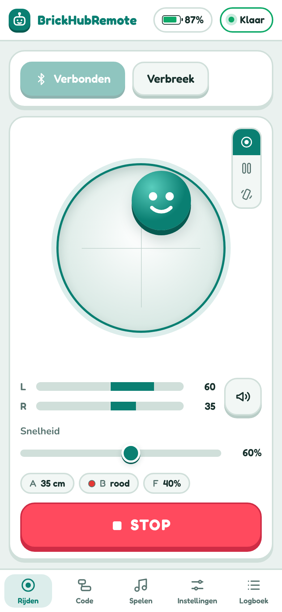
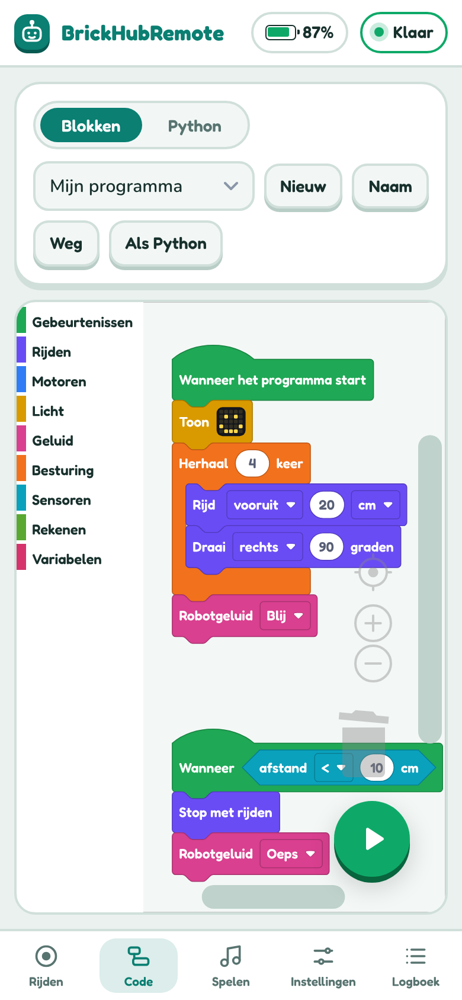
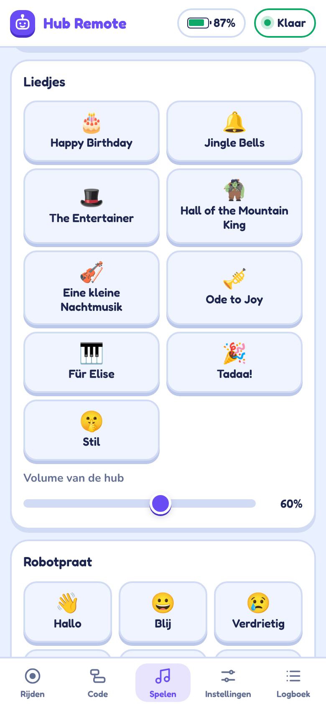
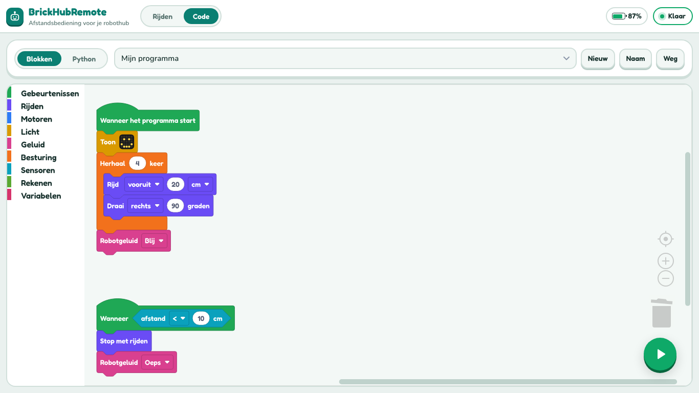

Bestuur en programmeer je LEGO® Education SPIKE™-hub vanaf je telefoon Drive and program your LEGO® Education SPIKE™ hub from your phone
Hub Remote is een gratis web-app voor de SPIKE™ Prime- en de SPIKE™ Essential-hub. Je hub houdt zijn eigen firmware: de app zet er alleen een klein programma op en praat daar via Bluetooth mee. Je hebt geen account nodig en er gaat niets naar een server. Hub Remote is a free web app for the SPIKE™ Prime and SPIKE™ Essential hubs. Your hub keeps its own firmware: the app only puts a small program on it and talks to that over Bluetooth. You don't need an account and nothing goes to a server.

Op welk apparaat werkt het?Which devices does it work on?
De app gebruikt Web Bluetooth. Niet elke browser heeft dat.The app uses Web Bluetooth. Not every browser has it.
- Chrome of Edge op Windows, macOS, ChromeOS of AndroidChrome or Edge on Windows, macOS, ChromeOS or Android
- werktworks Open de app en tik op Verbind met hub. Er hoeft niets geïnstalleerd te worden.Open the app and tap Connect to hub. Nothing needs installing.
- Android, als app op je beginschermAndroid, as an app on your home screen
- werktworks Open de app in Chrome en kies in het menu App installeren. Daarna werkt hij ook zonder internet.Open the app in Chrome and choose Install app in the menu. After that it also works without internet.
- iPhone & iPad
- via Bluefyvia Bluefy Safari kan niet met Bluetooth-apparaten praten. Installeer de gratis browser Bluefy uit de App Store en open daarin remotehubje.netlify.app/app.Safari cannot talk to Bluetooth devices. Install the free Bluefy browser from the App Store and open remotehubje.netlify.app/app in it.
- Google Play en App StoreGoogle Play and App Store
- nog nietnot yet Een app in Google Play komt eraan; een eigen iPhone-app is gepland.A Google Play app is coming; our own iPhone app is planned.
Wat het kanWhat it does
RijdenDrive
Met een joystick, met twee schuiven (één per wiel), of door je telefoon te kantelen. Op een laptop gaat het met WASD of de pijltjes. Twee extra motoren kun je vasthouden, aan- en uitzetten of als grijper gebruiken. Heb je een afstandssensor, dan kan de robot zelf stoppen voor een muur.With a joystick, with two sliders (one per wheel), or by tilting your phone. On a laptop you use WASD or the arrow keys. Two extra motors can be held, switched on and off, or used as a gripper. With a distance sensor, the robot can stop in front of a wall by itself.
STOP staat altijd in beeld. Valt de verbinding weg, dan stopt de robot binnen een seconde.STOP is always on screen. If the connection drops, the robot stops within a second.
ProgrammerenProgram
Met blokken die je in elkaar schuift: rijden, motoren, het lichtscherm, geluid, herhalen, als-dan, sensoren en variabelen. Tijdens het uitvoeren licht het blok op waar de robot is. Wie verder wil, schrijft MicroPython dat op de hub zelf draait; foutmeldingen van de hub verschijnen bij de regel waar het misging.With blocks you slot together: driving, motors, the light matrix, sound, loops, if-then, sensors and variables. While a program runs, the block the robot is on lights up. If you want more, write MicroPython that runs on the hub itself; error messages from the hub show up at the line where it went wrong.

SpelenPlay
Liedjes en geluidjes uit de luidspreker van de hub, met een gezichtje op het lichtscherm. Typ een zin en de hub zegt hem in robotpiepjes. Er is ook een piano, een dansje en je kunt een route opnemen en laten naspelen.Songs and sounds from the hub's speaker, with a face on the light matrix. Type a sentence and the hub says it in robot beeps. There is also a piano, a dance, and you can record a route and play it back.

En verderAlso
- Voor de rijbases uit de bouwinstructies van LEGO® Education zet de app de poorten goed, met voorbeeldprogramma's. Een schema laat zien welke kabel waar hoort.For the driving bases from LEGO® Education's building instructions, the app sets the ports and adds example programs. A diagram shows which cable goes where.
- Zelf een robot ontworpen? Open het ontwerp als LDraw™-bestand en bekijk het stap voor stap in 3D.Designed a robot yourself? Open the design as an LDraw™ file and go through it step by step in 3D.
- Elke robot krijgt een eigen profiel, dat je met een link of QR-code doorgeeft.Every robot gets its own profile, which you can pass on with a link or a QR code.
- Nederlands en Engels, een licht en een donker thema, en het past op telefoons, tablets en vouwtelefoons.Dutch and English, a light and a dark theme, and it fits phones, tablets and foldables.

BeginnenGetting started
- Zet de hub aan en sluit andere apps die ermee verbonden zijn.Turn the hub on and close other apps that are connected to it.
- Open Hub Remote en tik op Verbind met hub. De eerste keer zet de app een klein besturingsprogramma op de hub; dat duurt een paar seconden.Open Hub Remote and tap Connect to hub. The first time, the app puts a small control program on the hub; that takes a few seconds.
- Rijdt de robot de verkeerde kant op, kies dan onder Instellingen welke motor links en rechts zit.If the robot drives the wrong way, choose under Settings which motor is left and which is right.
Op schoolAt school
Er is geen account en geen server: instellingen en programma's blijven op het toestel van de leerling. De app werkt op Chromebooks en, als hij één keer geopend is, ook zonder internet. De broncode staat op GitHub onder de MIT-licentie.There is no account and no server: settings and programs stay on the pupil's device. The app works on Chromebooks and, once it has been opened, without internet. The source code is on GitHub under the MIT licence.
Hoe ver is het?How far along is it?
Verbinden en rijden zijn getest met een echte SPIKE™ Prime-hub. Veel van wat later is gekomen (muziek, sensoren, Python, de Essential-hub) is tot nu toe alleen getest met een nagebootste hub. Werkt iets niet zoals hier staat, meld het dan op GitHub.Connecting and driving have been tested with a real SPIKE™ Prime hub. Much of what came later (music, sensors, Python, the Essential hub) has so far only been tested against a simulated hub. If something doesn't work as described here, please report it on GitHub.
VragenQuestions
Welke hubs werken?Which hubs work?
De LEGO® Education SPIKE™ Prime-hub (6 poorten) en de SPIKE™ Essential-hub (2 poorten), met de gewone firmware van de SPIKE™-app 3. De Essential-hub heeft geen luidspreker en geen lichtscherm; geluid komt dan uit je telefoon.The LEGO® Education SPIKE™ Prime hub (6 ports) and the SPIKE™ Essential hub (2 ports), with the regular firmware of the SPIKE™ app 3. The Essential hub has no speaker and no light matrix; sound then comes from your phone.
Verandert dit de firmware van mijn hub?Does this change my hub's firmware?
Nee. Hub Remote zet alleen een klein programma in een programmaslot (standaard slot 19, dat kun je veranderen). Wat in dat slot stond, wordt overschreven. De rest van de hub blijft zoals hij was.No. Hub Remote only puts a small program in a program slot (slot 19 unless you change it). Whatever was in that slot is overwritten. The rest of the hub stays as it was.
Waarom werkt het niet in Safari?Why doesn't it work in Safari?
Safari, en elke andere browser op iPhone en iPad, heeft geen Web Bluetooth. De browser Bluefy heeft het wel en is gratis.Safari, and every other browser on iPhone and iPad, lacks Web Bluetooth. The Bluefy browser has it and is free.
Kost het iets?Does it cost anything?
Nee. Er is geen reclame en geen account.No. There are no ads and no account.
Is Hub Remote van de LEGO Group?Is Hub Remote made by the LEGO Group?
Nee. Het is een onafhankelijk project dat met hun hubs werkt. De LEGO Group sponsort of steunt het niet.No. It is an independent project that works with their hubs. The LEGO Group does not sponsor or endorse it.